01 / Guest Room
Private bedroom; bed, dresser, hearth and intimate furnishings.

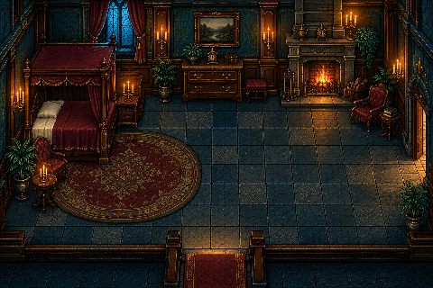
Entrances: east, south
Native PNG · Master · Prompt · Engine 1× · Engine 2×


Entrances: east, south-east
Native PNG · Master · Prompt · Engine 1× · Engine 2×
Nine rooms, two layouts each. Click a room image for its source master. No characters are baked into these backgrounds.
Native backgrounds: 480 × 320. Engine previews: 480 × 360 with the original 48-pixel investigator and 47-pixel Eleanor. These are art previews; collisions, doors and house connections remain to be authored.
Built-in imagegen artwork; prompts are linked per layout. Earlier library and bright-window exterior tests remain archived.
All native engine previews · All close engine previews
Private bedroom; bed, dresser, hearth and intimate furnishings.

Column-framed passage, warm fires and a guiding runner.
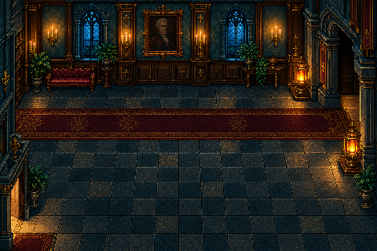
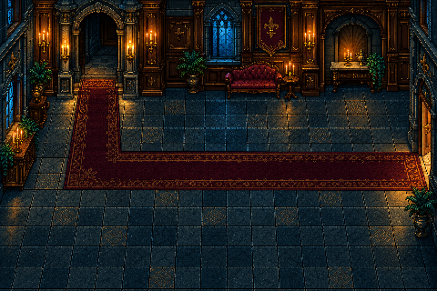
Tall windows, chandelier, statues and a broad central axis.

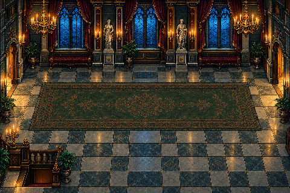
Cool masonry, arches and small localized fire pools.
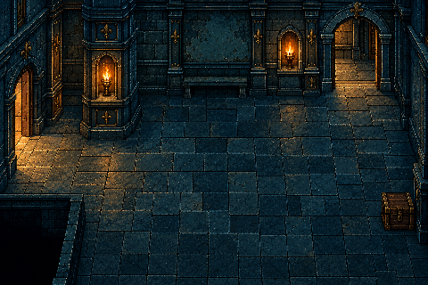

Bookshelves, ladder, reading furniture and a separate evidence book.
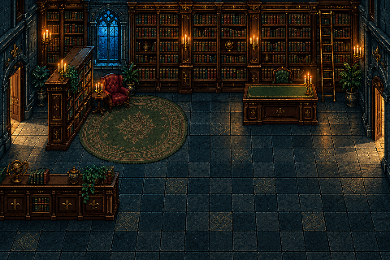

Formal counter, runner and broad conversation floor.


Cool foliage, dark mansion facade and a narrow approach.
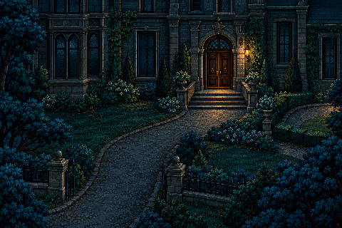
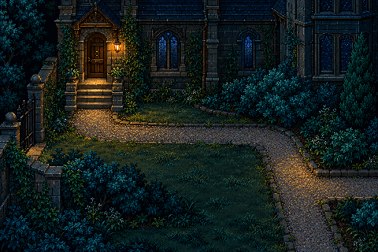
Teal/charcoal stone, paired statues and restrained cold light.
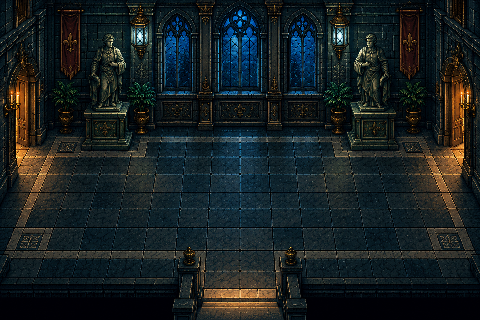
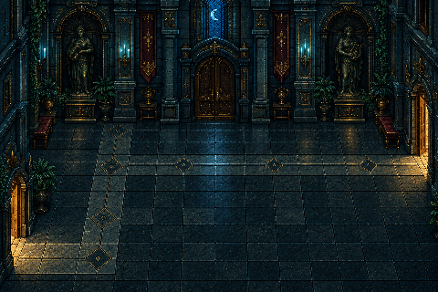
Readable treads, turning stairs and a dim upper route.

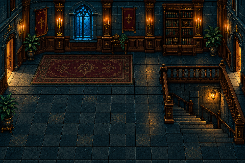
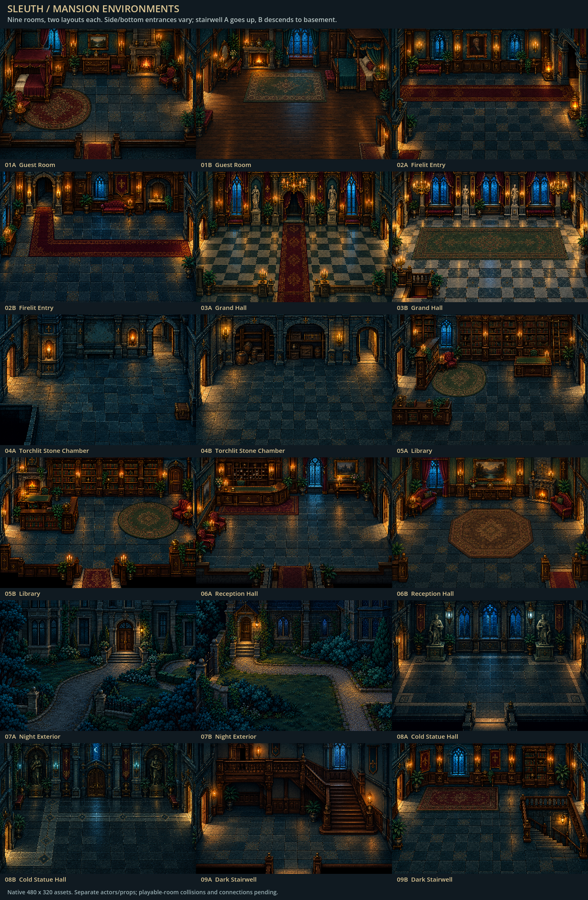